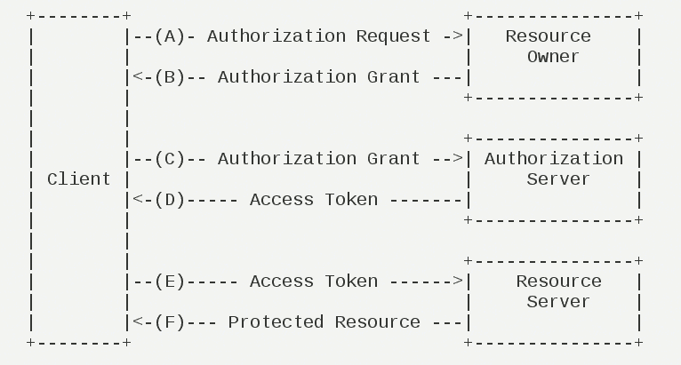
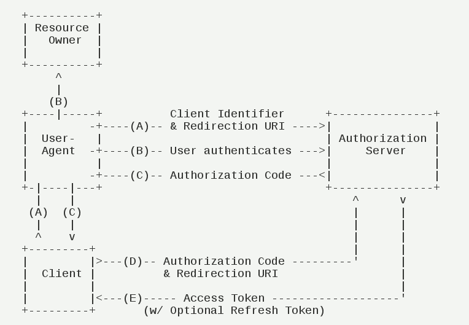
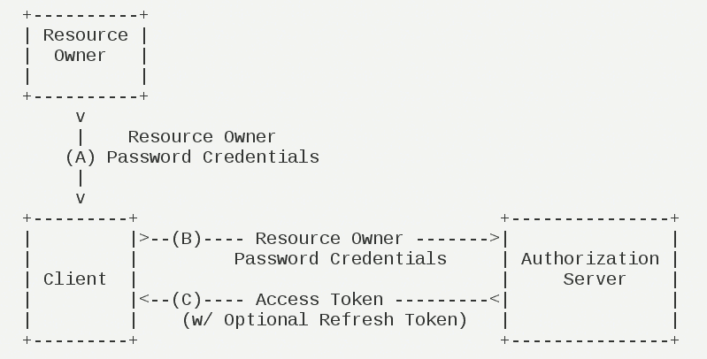
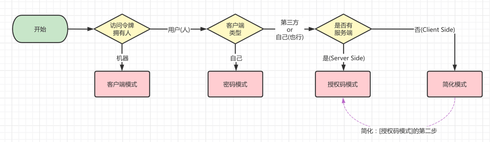

OAuth2.0
OAuth2.0
（1）Third-party application：第三方应用程序，客户端
（2）HTTP Service：HTTP服务提供商，本文中简称”服务提供商”
（3） Resource Owner：资源所有者，用户
（4）User Agent：用户代理，本文指浏览器
（5）Authorization Server：认证服务器，专门用来处理认证的服务器
（6）Resource Server：资源服务器，存放用户生成的资源的服务器
运行流程
（A）用户打开客户端以后，客户端要求用户给予授权。
（B）用户同意给予客户端授权。
（C）客户端使用上一步获得的授权，向认证服务器申请令牌。
（D）认证服务器对客户端进行认证以后，确认无误，同意发放令牌。
（E）客户端使用令牌，向资源服务器申请获取资源。
（F）资源服务器确认令牌无误，同意向客户端开放资源。
OAuth2.0四种授权方式
- 授权码模式（authorization code）
- 简化模式（implicit）
- 密码模式（resource owner password credentials）
- 客户端模式（client credentials）
授权码模式
（A）用户访问客户端，后者将前者导向认证服务器。
（B）用户选择是否给予客户端授权。
（C）假设用户给予授权，认证服务器将用户导向客户端事先指定的”重定向URI”（redirection URI），同时附上一个授权码。
（D）客户端收到授权码，附上早先的”重定向URI”，向认证服务器申请令牌。这一步是在客户端的后台的服务器上完成的，对用户不可见。
（E）认证服务器核对了授权码和重定向URI，确认无误后，向客户端发送访问令牌（access token）和更新令牌（refresh token）。
下面是上面这些步骤所需要的参数。
A步骤中，客户端申请认证的URI，包含以下参数：
- response_type：表示授权类型，必选项，此处的值固定为”code”
- client_id：表示客户端的ID，必选项
- redirect_uri：表示重定向URI，可选项
- scope：表示申请的权限范围，可选项
- state：表示客户端的当前状态，可以指定任意值，认证服务器会原封不动地返回这个值。
例子：
GET /authorize?response_type=code&client_id=s6BhdRkqt3&state=xyz |
C步骤中，服务器回应客户端的URI，包含以下参数：
- code：表示授权码，必选项。该码的有效期应该很短，通常设为10分钟，客户端只能使用该码一次，否则会被授权服务器拒绝。该码与客户端ID和重定向URI，是一一对应关系。
- state：如果客户端的请求中包含这个参数，认证服务器的回应也必须一模一样包含这个参数。
下面是一个例子。
HTTP/1.1 302 Found |
D步骤中，客户端向认证服务器申请令牌的HTTP请求，包含以下参数：
- grant_type：表示使用的授权模式，必选项，此处的值固定为”authorization_code”。
- code：表示上一步获得的授权码，必选项。
- redirect_uri：表示重定向URI，必选项，且必须与A步骤中的该参数值保持一致。
- client_id：表示客户端ID，必选项。
下面是一个例子。
POST /token HTTP/1.1 |
E步骤中，认证服务器发送的HTTP回复，包含以下参数：
- access_token：表示访问令牌，必选项。
- token_type：表示令牌类型，该值大小写不敏感，必选项，可以是bearer类型或mac类型。
- expires_in：表示过期时间，单位为秒。如果省略该参数，必须其他方式设置过期时间。
- refresh_token：表示更新令牌，用来获取下一次的访问令牌，可选项。
- scope：表示权限范围，如果与客户端申请的范围一致，此项可省略。
下面是一个例子。
HTTP/1.1 200 OK |
密码模式
密码模式（Resource Owner Password Credentials Grant）中，用户向客户端提供自己的用户名和密码。客户端使用这些信息，向”服务商提供商”索要授权。
在这种模式中，用户必须把自己的密码给客户端，但是客户端不得储存密码。这通常用在用户对客户端高度信任的情况下，比如客户端是操作系统的一部分，或者由一个著名公司出品。而认证服务器只有在其他授权模式无法执行的情况下，才能考虑使用这种模式。
它的步骤如下：
（A）用户向客户端提供用户名和密码。
（B）客户端将用户名和密码发给认证服务器，向后者请求令牌。
（C）认证服务器确认无误后，向客户端提供访问令牌。
B步骤中，客户端发出的HTTP请求，包含以下参数：
- grant_type：表示授权类型，此处的值固定为”password”，必选项。
- username：表示用户名，必选项。
- password：表示用户的密码，必选项。
- scope：表示权限范围，可选项。
例子
POST /token HTTP/1.1 |
C步骤中，认证服务器向客户端发送访问令牌，下面是一个例子。
HTTP/1.1 200 OK |
授权方式的选择
问题一：什么场景下，使用客户端模式（Client Credentials）？
如果令牌拥有者是机器的情况下，那就使用客户端模式。 例如说：
- 开发了一个开放平台，提供给其它外部服务调用
- 开发了一个 RPC 服务，提供给其它内部服务调用
实际的案例，我们接入微信公众号时，会使用 appid 和 secret 参数，获取 Access token (opens new window)访问令牌。
问题二：什么场景下，使用密码模式（Resource Owner Password Credentials）？
接入的 Client 客户端，是属于自己的情况下，可以使用密码模式。 例如说：
- 客户端是你自己公司的 App 或网页，然后授权服务也是你公司的
不过，如果客户端是第三方的情况下，使用密码模式的话，该客户端是可以拿到用户的账号、密码，存在安全的风险，此时可以考虑使用授权码或简化模式。
问题三：什么场景下，使用授权码模式（Authorization Code）？
接入的 Client 客户端，是属于第三方的情况下，可以使用授权码模式。例如说：
- 客户端是你自己公司的 App 或网页，作为第三方，接入 微信 (opens new window)、QQ (opens new window)、钉钉 (opens new window)等等进行 OAuth 2.0 登录
当然，如果客户端是自己的情况下，也可以采用授权码模式。例如说：
- 客户端是腾讯旗下的各种游戏，可使用微信、QQ，接入 微信 (opens new window)、QQ (opens new window)等等进行 OAuth 2.0 登录
- 客户端是公司内的各种管理后台（ERP、OA、CRM 等），跳转到统一的 SSO 单点登录，使用授权码模式进行授权
问题四：什么场景下，使用简化模式（Implicit）？
简化模式，简化 的是授权码模式的流程的 第二步，差异在于：
- 授权码模式：授权完成后，获得的是 code 授权码，需要 Server Side 服务端使用该授权码，再向授权服务器获取 Access Token 访问令牌
- 简化模式：授权完成后，Client Side 客户端直接获得 Access Token 访问令牌
暂时没有特别好的案例，感兴趣可以看看如下文档，也可以不看：
 wechat
wechat alipay
alipay